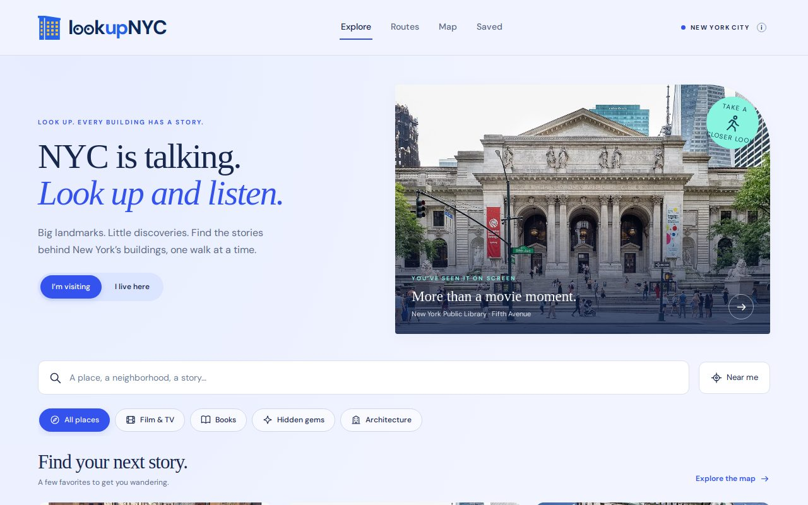
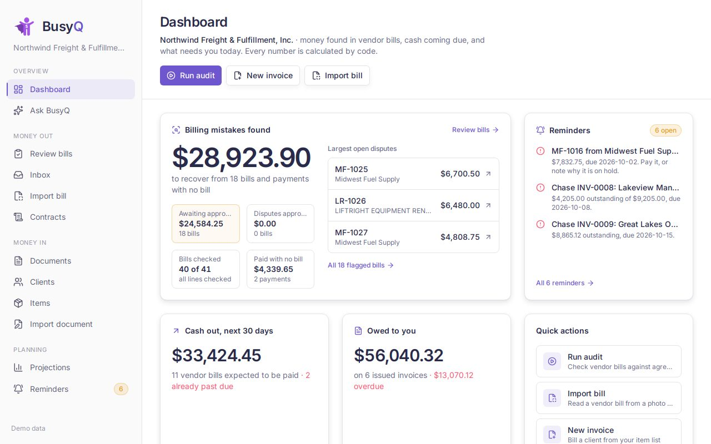
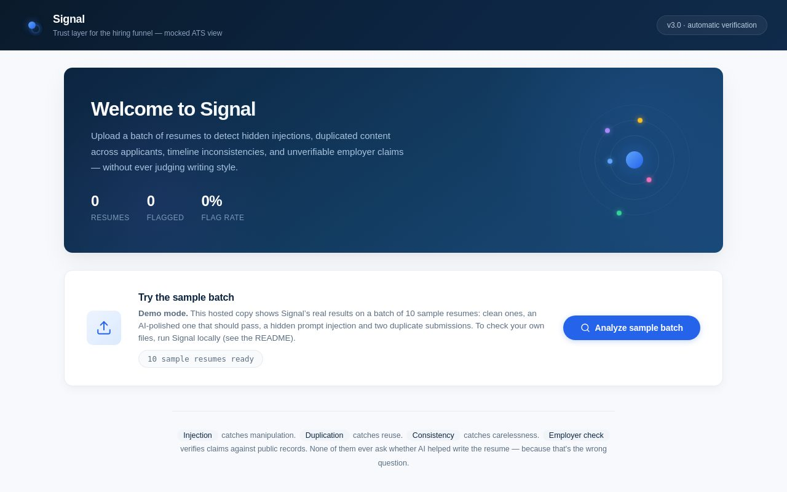
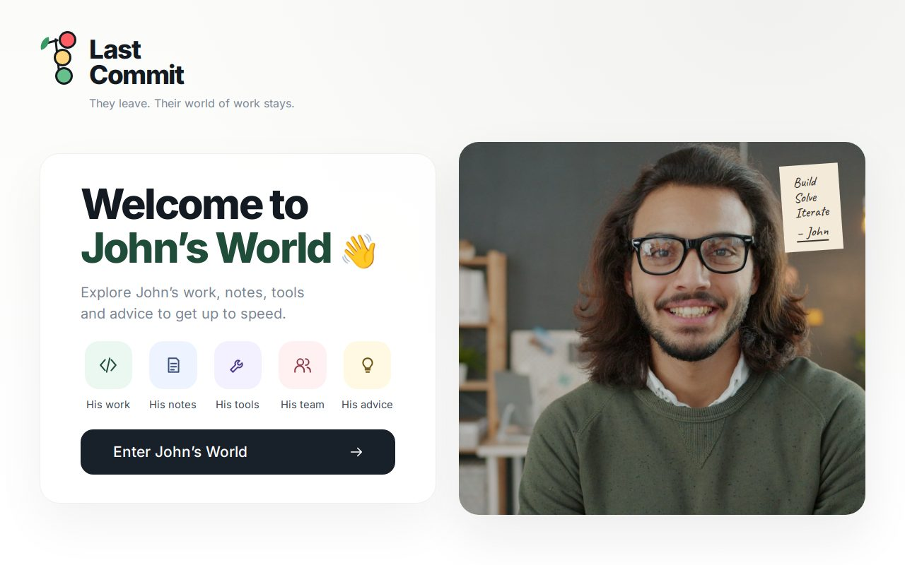
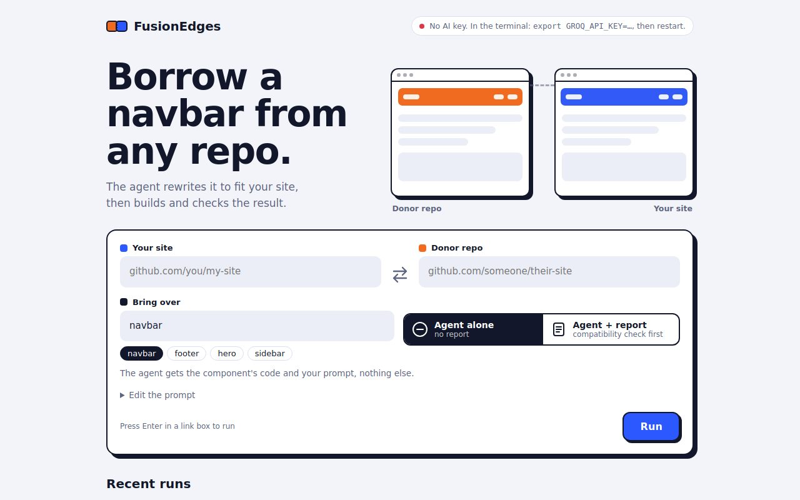

Oct 2026 · Hackathon
LookUp NYC
A walking guide that shows you exactly where to look on New York’s buildings, then plays the story behind each one.

Sachi Singh · New York
Seeds sown in a weekend, built as a team.
Oct 2026 · Hackathon
A walking guide that shows you exactly where to look on New York’s buildings, then plays the story behind each one.

Oct 2026 · Money Talks 2
An AI back office for small businesses: snap a vendor invoice and it becomes an editable record, with uncertain fields flagged.

Sep 2026 · Hackathon
Screens a batch of resumes for hidden prompt injections and duplicate submissions, with the evidence for each.

Grown slowly, over a semester.
Fall 2026 · MS-CEI
They leave. Their world of work stays. A design prototype that helps a new developer find their way around code whose owner has left.

Fall 2026 · Research
Tests whether giving a coding agent a compatibility report first makes cross-repo changes safer and cheaper.

“Don’t waste your time chasing butterflies. Mend your garden, and the butterflies will come to you. And even if they don’t, you will still have a beautiful garden.”
Attributed to Mario Quintana